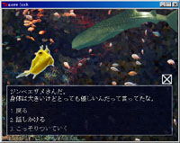
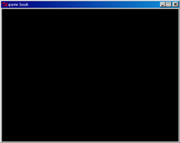
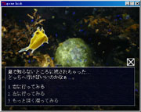

Ruby ではじめるプログラミング 【最終回】
著者：だん
はじめに
今回は最終回です。 前回 (Ruby ではじめるプログラミング 【第 3 回】) 紹介したプログラムを改造してグラフィカルなプログラミングに挑戦します。
ビジュアルノベル
: 
前回までは、コマンドプロンプトで動作するプログラムだけを扱ってきました。 今回は、前回までに作成してきたゲームブックプログラムをグラフィカルにして、ビジュアルノベルを作ってみます。
グラフィックを使ったプログラムも、これまでのコマンドプロンプトで動かしてきたプログラムと、本質的に変わらないというのを知ってもらうことが、今回のテーマです。
動かしてみよう
まず visualnovel.zip をダウンロードしてください。 ビジュアルノベルのサンプルプログラムと画像データが入っています。
このサンプルプログラムを動かすには Ruby/Tk が動作する環境が必要です。Ruby/Tk とは、Ruby で GUI (グラフィカルユーザーインターフェース) を扱うためのライブラリで、Ruby に標準添付されています。
Ruby ではじめるプログラミング 第 1 回で紹介した手順で One-Click Ruby Installer を使って Ruby をインストールした場合は、既に Ruby/Tk が使える状態になっています。これまでと同じ操作でプログラムを起動することができます。
作業ディレクトリにダウンロードしたファイルを展開してコマンドプロンプトで次のように入力してください。
ruby visualnovel.rb次のような画面が表示されれば OK です。画面下に表示されている選択肢をマウスでクリックすると場面が切り替わります。


ファイル構成
visualnovel.zip には 3 つのソースファイルがあります。
- guiutil.rb … GUI を使うためのユーティリティ
- scenario.rb … シナリオデータ
- visualnovel.rb … ゲームプログラム本体
guiutil.rb
guiutil.rb ではグラフィックを扱うためのいくつかのメソッドを定義しています。 guiutil.rb で定義されているメソッドの使い方は後ほど解説します。 中身については特に解説しません。
scenario.rb
シナリオデータを記述するソースファイルです。このファイルを書き換えることでシナリオをカスタマイズすることができます。
visualnovel.rb
ビジュアルノベルプログラムの本体となるソースファイルです。 このプログラムが guiutil.rb と scenario.rb を利用する形になっています。
シナリオテーブルのデータ構造
scenario.rb では前回紹介したハッシュと配列を使ってシナリオのデータを定義しています。このシナリオテーブルのデータ構造を理解することがこのプログラムを理解する最大のポイントです。
このシナリオデータは前回ゲームブックプログラムで紹介したハッシュを使ったテーブルデータを少し改造したものです。
scenario.rb は次のようになっています。
# シナリオテーブル
ScenarioTbl = {
'opening' => [
['bg00.gif', "嵐で知らないところに流されちゃった…\nどっちへ行けばいいのかなぁ…。",],
['fault-a', "右に行ってみる"],
['fault-b', "左に行ってみる"],
['depth', "もっと深く潜ってみる"],
],
'fault-a' => [
['bg01.gif', "水が冷たくなってきた。こっちじゃないみたい…。"],
['opening', "戻る"],
],
'fault-b' => [
['bg02.gif', "うわっ。鰯の大群だ！！"],
['opening', "戻る"],
],
'depth' => [
['bg03.gif', "あ、何かいる。どうしよう…。"],
['depth2', "近づいてみる"],
['opening', "怖いから戻る"],
],
}
ScenarioTbl はハッシュです。次のように書くとわかりやすいでしょう。
ScenarioTbl = {
'opening' => opening のシーンデータ ,
'fault-a' => fault-a のシーンデータ ,
'fault-b' => fault-b のシーンデータ ,
'depth' => depth のシーンデータ ,
}ScenarioTbl に対してシーン名のキー (文字列) を与えるとシーンデータを取り出すことができます。
つまり、
scene_data = ScenarioTbl['opening']と書くと scene_data に「 opening のシーンデータ」を代入することができます。
次に scene_data の中身を詳しく見ていきましょう。
シーンデータのデータ構造
シーンデータは配列
scene_data = ScenarioTbl['opening']のようにして ScenarioTbl から取り出すことのできるシーンデータは次のような配列です。
[
背景とメッセージデータ ,
選択肢データ 1,
選択肢データ 2,
選択肢データ 3,
]次のようにすれば ScenarioTbl から「背景とメッセージデータ」にアクセスすることができます。(ただし、アクセスするだけで実際には何も処理は行っていません。)
# シーンデータを scene_data に代入
scene_data = ScenarioTbl['opening']
scene_data[0] # 背景とメッセージデータにアクセス
ScenarioTbl['opening'][0] # このようにダイレクトにアクセスすることも可能背景とメッセージデータも配列
先ほど取り出した「背景とメッセージデータ」の中身も配列です。
[背景画像のファイル名, シーンメッセージ]ここまで理解すれば実際に使用するデータを取り出すことができます。
scene_data = ScenarioTbl['opening']
p scene_data[0][0] # 背景画像のファイル名を表示
p scene_data[0][1] # シーンメッセージを表示選択肢データも配列
選択肢データにアクセスするには次のようにします。
scene_data = ScenarioTbl['opening']
scene_data[1] # 選択肢データ 1 にアクセス
scene_data[2] # 選択肢データ 2 にアクセス
scene_data[3] # 選択肢データ 3 にアクセス選択肢データの中身も次のようなデータの配列です。
[ジャンプ先シーン ID, 選択肢メッセージ]scene_data = ScenarioTbl['opening']
p scene_data[1][0] # 選択肢 1 のジャンプ先シーン ID を表示
p scene_data[1][1] # 選択肢 1 のメッセージを表示まとめ
つまりひとつのシーンデータは次のような 2 次元配列です。
# ひとつのシーンデータ
[
[背景画像のファイル名, シーンメッセージ],
[ジャンプ先シーン ID, 選択肢メッセージ],
[ジャンプ先シーン ID, 選択肢メッセージ],
[ジャンプ先シーン ID, 選択肢メッセージ],
]このシーンデータが ScenarioTbl の値になっているわけです。
# シナリオデータ
ScenarioTbl = {
シーン ID => シーンデータ ,
シーン ID => シーンデータ ,
・
・
・
}ScenarioTbl が理解できれば今回のビジュアルノベルプログラムを理解することは容易です。 ではこのテーブルデータを使った実際の処理を見ていくことにしましょう。
visualnovel.rb
このスクリプトは長いのでプログラム中に多くのコメントをつけました。とは言ってもコメントも含めて 120 行ほどのプログラムです。
require "guiutil.rb"
require "scenario.rb"
#--------------------------------------
# 初期化処理
#--------------------------------------
def init
# ウィンドウの作成
create_screen "Visual Novel", 480, 360
# GUI システム開始
start_gui
# グローバル変数の初期化
$font_size = 12 # フォントの表示サイズ
$scene = 'opening' # 場面 ID
$fonts = [] # フォントオブジェクト格納用の配列
$bg_image = nil # 背景オブジェクトを代入する変数
$quit_button = nil # 終了ボタンオブジェクトを代入する変数
end
#--------------------------------------
# メインループ
#--------------------------------------
def mainloop(tbl)
while true
# シーンデータ取り出し
scene_data = tbl[$scene]
# 背景画像が指定されていれば表示する
bg_fname = scene_data[0][0]
if bg_fname
$bg_image = create_img 0, 0, bg_fname
end
# 終了ボタンの表示
$quit_button = create_img_button 0, 438, 180, "quiticon0.gif", "quiticon1.gif"
# メッセージの表示
message = scene_data[0][1]
font = create_font message, 24,218, $font_size
$fonts.push font
# 選択肢メッセージの表示
(scene_data.size-1).times do |i|
sleep 0.2
idx = i+1
ch_msg = "#{idx}. #{scene_data[idx][1]}"
font = create_font_button idx, ch_msg, 24, 270+i*24, $font_size
$fonts.push font
end
# ボタンの入力待ち
input_value = get_button_id
# ボタン ID が 0 なら終了
if input_value == 0
finish
end
# 選択されたフォントを水色にする
$fonts[input_value].color "#88FFFF"
# 次のシーン ID を取り出す
$scene = scene_data[input_value][0]
# nil なら終了
if $scene == nil
finish
end
# 画面を黒い四角で塗りつぶす
block_mask
# 表示物を削除
delete_items
end
end
#--------------------------------------
# 表示物の削除
#--------------------------------------
def delete_items2()
# 表示中の終了ボタンを削除
if $quit_button
$quit_button.delete
$quit_button = nil
end
end
#--------------------------------------
# 表示物の削除
#--------------------------------------
def delete_items
# 表示中のフォントを削除
$fonts.size.times do |idx|
$fonts[idx].delete
end
$fonts = []
# 表示中の背景画像を削除
if $bg_image
$bg_image.delete
$bg_image = nil
end
end
#--------------------------------------
# 終了処理
#--------------------------------------
def finish
# 表示物があれば削除
delete_items
# GUI システム終了
stop_gui
# プログラムの終了
exit
end
#======================================
# 実際の処理はここからスタート
#======================================
init # 初期化処理
mainloop ScenarioTbl # メインループ
guiutil.rb と scenario.rb をロード
先頭に見慣れない 2 行のコードがあります。
require "guiutil.rb"
require "scenario.rb"require は外部のプログラム (ライブラリ) をロードするための Ruby の機能です。 このプログラム中では guiutil.rb と scenario.rb で定義しているメソッドとシナリオテーブルを利用するので、はじめにロードしておきます。
全体的な流れを把握する
プログラムがどこから開始するかわかるでしょうか。 このプログラムでは 119 行目の
init # 初期化処理から処理が始まります。119 行目より前はメソッド定義なので、メソッド内のプログラムは、そのメソッドが呼び出されたときにはじめて実行されます。
init は 7 行目で定義しているメソッドです。今回のプログラムではじめに一回だけ実行される初期化処理が書かれています。このメソッドを実行した後、次の
mainloop ScenarioTbl # メインループが実行されます。mainloop は 24 行目で定義しているメソッドです。 プログラム実行中は__このメソッドの中で処理が無限ループ__しています。無限ループなのでこのメソッドを呼び出すともう処理は帰ってきません。
おおざっぱな流れはこのようになります。
init 初期化処理
最初に実行されることになる init メソッドの中身を詳しく見ていきます。
# ウィンドウの作成
create_screen "Visual Novel", 480, 360create_screen はウィンドウを作成するメソッドです。引数には、作成したウィンドウのタイトルバーに表示する文字列 , 横方向のサイズ , 縦方向のサイズを渡します。
# GUI システム開始
start_gui: 
start_gui を呼び出すと GUI のシステムが開始します。また start_gui を実行したときにはじめてウィンドウが表示されます。 create_screen と start_gui は guiutil.rb で定義しているメソッドです。

次のコードを見てください。
# グローバル変数の初期化
$font_size = 12 # フォントの表示サイズ
$scene = 'opening' # 場面 ID
$fonts = [] # フォントオブジェクト格納用の配列
$bg_image = nil # 背景オブジェクトを代入する変数
$quit_button = nil # 終了ボタンオブジェクトを代入する変数今回のプログラムで使用するいくつかの変数をここで初期化しています。前回までに紹介した通常の変数はそのメソッドの中でしか使用出来ません。変数名の先頭に $ をつけるとその変数はプログラム中の全ての箇所で使用出来るようになります。つまり、ここではいくつかのメソッド内で共有したい変数を初期化しています。
各変数の役割はコメントにあるとおりです。いくつかの変数については実際に使うときも説明します。
init メソッドが終わると次に mainloop メソッドが呼び出されます。
mainloop メインループ
基本的には前回紹介したゲームブックのプログラムとそれほど変わりません。新しくグラフィック表示処理が追加されていますが、これらは単なるメソッド呼び出しです。では詳しく見ていきましょう。
まず、全体が
while true
処理
endという無限ループになっています。このプログラムの終了には 3 種類のパタンがあります。
- メッセージの右上にある終了ボタンがクリックされる … 55 行目で処理
- 選択肢のジャンプ先の ID が nil だった場合 … 64 行目で処理
- ウィンドウの右上にある×ボタンが押される … guiutil.rb 内部で終了処理が行われる
1 番目と 2 番目の場合は終了処理を行う finish メソッドが呼ばれ、finish メソッドの中でプログラムを終了させる exit が実行されます。
また mainloop メソッドは引数に シナリオテーブルを受け取るので、引数 tbl はシナリオテーブルになります。
ではメインループの中を具体的に見ていくことにします。
背景の表示
30 行目で bg_fname に BG に使う画像ファイルのファイル名をシーンデータから取り出しています。 BG を使用しないシーンでは nil が代入されています。
32 行目の
$bg_image = create_img 0, 0, bg_fname: 
で背景画像を表示しています。create_img は画像を表示するためのメソッドです。引数には、横方向の表示座標 (X) , 縦方向の表示座標 (Y) , ファイル名を渡します。create_img が戻り値として返すのは、作成した画像を操作するためのオブジェクト (正確にはクラスのインスタンスといいます) です。それは guiutil.rb で定義されています。このオブジェクトを $bg_image に代入しておきます。 $bg_image.delete を実行すると表示した背景を削除することができます。
create_img は guiutil.rb で定義されているメソッドです。guiutil.rb で定義しているメソッドをここでまとめて紹介しておくと
- create_img … 画像を作成
- create_img_button … マウスでクリックできる画像ボタンを作成
- create_font … 文字列を表示
- create_font_button … マウスでクリックできる文字列を表示
- get_button_id … クリックされたボタンの ID を取得
- block_mask … 画面を任意色で塗りつぶすエフェクト表示
があります。
終了ボタンの表示
メッセージ表示欄右上の終了アイコンを作成する処理です。
# 終了ボタンの表示
$quit_button = create_img_button 0, 438, 180, "quiticon0.gif", "quiticon1.gif": 
create_img_button の引数は、ボタン ID , 表示座標 (X) , 表示座標 (Y) , 画像ファイル名 1 , 画像ファイル名 2 です。
ボタン ID とはこの画像がマウスでクリックされたときに get_button_id メソッドが返す ID です。整数を設定してください。 画像ファイル名 2 でマウスカーソルを乗せたときの画像を指定できます。画像ファイル名 2 は省略することも可能です。
このボタンを操作するオブジェクトを $quit_button に代入しておきます。
メッセージの表示
次の部分を見てください。
# メッセージの表示
message = scene_data[0][1]
font = create_font message, 24,218, $font_size
$fonts.push font: 
シーンデータから取り出した message をフォントとして画面に表示しています。24,218 は表示座標、$font_size はフォントのサイズです。戻り値を font に代入して、font を配列 $fonts に追加しています。
選択肢メッセージの表示
次のプログラムでは選択肢となるメッセージの表示を行っています。
# 選択肢メッセージの表示
(scene_data.size-1).times do |i|
sleep 0.2
idx = i+1
ch_msg = "#{idx}. #{scene_data[idx][1]}"
font = create_font_button idx, ch_msg, 24, 270+i*24, $font_size
$fonts.push font
end: 
選択肢の数はシーンによって異なるのでシーンデータ配列のサイズから表示数を求めています。シーンデータは以下のような配列でした。
[
背景とメッセージデータ ,
選択肢データ 1,
選択肢データ 2, # (省略可能)
選択肢データ 3, # (省略可能)
]配列のサイズから、背景とメッセージデータを取り除いた (-1 した) 数が選択肢の数になります。 times によるループを使って、選択肢の数だけでメッセージフォントを作成します。
ch_msg = "#{idx}. #{scene_data[idx][1]}"の部分では表示する文字列を作成しています。scene_data[idx][1] によって選択肢の文字列を取り出し、先頭に選択肢番号を追加しています。この処理により表示される選択肢は次のようになります。
選択肢の番号. 選択肢メッセージこの文字列データを create_font_button に渡します。idx は選択肢番号、ch_msg は表示する文字列です。 ここでも戻り値を $fonts 配列に追加しています。
$fonts 配列の中身は次のようになります。
[
メッセージフォントオブジェクト,
選択肢 1 フォントオブジェクト,
選択肢 2 フォントオブジェクト, # 選択肢 2 がある場合
選択肢 3 フォントオブジェクト, # 選択肢 3 がある場合
]選択肢がひとつしかない場合は次のようになります。
[
メッセージフォントオブジェクト,
選択肢 1 フォントオブジェクト,
]$fonts は後で表示したフォントを削除するときに使用しています。
ボタンを入力を処理
次のコードはマウスでクリックされたボタンの ID を受け取るところです。
# ボタンの入力待ち
input_value = get_button_id
# ボタン ID が 0 なら終了
if input_value == 0
finish
endget_button_id メソッドを呼び出すとあらかじめ配置したボタンをマウスでクリックするまでプログラムの処理が止まります。実際はプログラムが停止するわけではなく get_button_id メソッドの中でループしています。 ボタンがクリックされると get_button_id の処理が終了し、クリックされたボタンの ID が戻り値として返ります。
ボタン ID 0 は終了ボタンの ID なので get_button_id の戻り値が 0 だった場合は finish メソッドを呼び出してプログラムを終了させます。
表示物を削除
ボタンがクリックされるとシーンが切り替わります。メインループ処理の最後で表示物を削除しています。
# 表示物を削除
delete_itemsループの先頭でシーンに応じた背景やフォントがまた表示されることになります。
最後に
今回紹介したビジュアルノベルのプログラムは、前回紹介したコマンドプロンプトで動くゲームブックプログラムに比べるとアプリケーションとしては見違えるほどに立派になりました。 しかし、プログラムの内容は前回までに紹介したものとそれほど変わりません。 コマンドプロンプトで動作するテキストを扱ったプログラムも、派手なグラフィックを使用した PS2 のゲームプログラムも、基本は同じなのです。
この連載で紹介したこと以外にも、プログラミングの世界には、まだまだたくさんの覚えるべきことがあります。しかし、連載の中で紹介した方法でもそれなりのプログラミングは可能です。あとは自分でプログラムを書いているうちに、自然と何を勉強すべきかということもわかってくるでしょう。この「 Ruby ではじめるプログラミング」がプログラミングを始めるきっかけになってくれれば幸いです。
筆者について
だん (dan at dgames dot jp)
ゲームメーカーに勤めるゲームクリエイター。 Ruby をゲーム開発に効果的に利用する方法を模索中。開発日記あり。